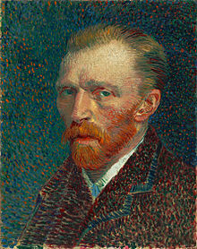

.LukisanDunia 
Berita tentang berbagai macam Lukisan
Berita tentang berbagai macam Lukisan
| Home Galeri Register About | |||||
|
16-08-2018 Vincent van Gogh Vincent Willem van Gogh (Belanda: [ˈvɪnsɛnt ˈʋɪləm vɑn ˈɣɔx] ( dengarkan);[note 1] (lahir di Zundert, Belanda, 30 Maret 1853 – meninggal di Auvers-sur-Oise, Perancis, 29 Juli 1890 pada umur 37 tahun) adalah pelukis pascaimpresionis Belanda yang menjadi salah satu tokoh terkenal dan berpengaruh dalam sejarah seni rupa Barat. Sepanjang satu dasawarsa, ia membuat sekitar 2.100 karya seni, yang meliputi sekitar 860 lukisan minyak, sebagian besar berasal dari dua tahun terakhir masa hidupnya di Perancis, tempat ia wafat. Karya-karya tersebut meliputi lanskap, cuplikan kehidupan, potret dan potret diri, dan dicirikan dengan warna yang tebal dan dramatis, karya kuas implusif dan ekspresif yang berkontribusi pada pendirian seni rupa modern. Ia bunuh diri pada usia 37 tahun karena sakit mental dan kemiskinan.
Lahir dalam sebuah keluarga kelas menengah ke atas, van Gogh dibesarkan menjadi seorang anak yang serius, pendiam dan telaten. Pada masa muda, ia bekerja sebagai pedagang penyalur karya seni, sering melakukan perjalanan, namun menjadi tertekan setelah ia pindah ke London. Ia beralih ke bidang agama, menjalani waktu sebagai misionaris Protestan di selatan Belgia. Ia terserang sakit sebelum mulai melukis pada 1881, kembali pulang ke rumah orangtuanya. Adiknya Theo mendukungnya secara finansial, dan keduanya menjalin komunikasi jangka panjang melalui surat-menyurat. Karya-karya awalnya, kebanyakan cuplikan-cuplikan kehidupan dan penggambaran-penggambaran dari para buruh tani, berisi beberapa tanda warna yang cerah yang membedakan dengan karya-karya berikutnya. Pada 1886, ia pindah ke Paris, tempat ia bertemu para anggota avant-garde, meliputi Émile Bernard dan Paul Gauguin, yang bereaksi melawan sensibilitas Impresionis. Saat karyanya berkembang, ia membuat sebuah tema baru tentang cuplikan-cuplikan kehidupan dan lanskap-lanskap lokal. Lukisan-lukisannya bertumbuh dalam pewarnaan karena ia mengembangkan sebuah gaya yang sangat terealisasi saat ia singgah di Arles di selatan Perancis pada 1888. Pada masa itu, ia menghimpun materi subyeknya pada pohon zaitun, bunga mawar, ladang gandum, dan bunga matahari.
|
|||||
Copyright © HAJID